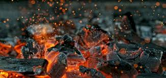

ماتت المخلوقات العضوية واستقرت في قاع المحيطات وسط طبقة من الرسوبيات دون أن يدخل الهواء إليها. وغطتها طبقات أرضية أخرى، حتى تكونت فوق هذه المواد العضوية وبفعل مر السنين حوالي 500 مليون سنة طبقة عازلة. ومع عدم وجود الأكسجين فككت البكتيريا هذه المواد العضوية إلى مكونات كيميائية أبسط تركيبًا. وبفعل الضغط والحرارة، تكونت المركبات الهيدروكربونية. أما الماء الذي بقى، فتبخّر أو ترسب فترتفع عندئذ هذه المواد الهيدروكربونية التي أخف وزنا من الطبقات الأرضية أو الحجرية التي فوقها، لتستقر أخيرا تحت الطبقات الجيولوجية التي تمنع ارتفاعها المستمر هذا. أما القسم الغازي من هذه المواد وهو الغاز الطبيعي، فيطفو بدوره على الجزء السائل منه (النفط السائل).
يتميز الوقود الإحفوري بامتلاكه كثافة طاقة عالية وبسهولة نقله وتخزينه. وبمعالجة الوقود الأحفوري بتروكيميائيًا، يمكن الحصول على أنواع مختلفة منه، وخاصة من الوقود الأحفوري السائل والغازي (كالنفط والغاز الطبيعي). حيث يتم استخراج وقود منها وذلك للاستعمالات المختلفة في المحركات والطائرات والسفن بعد المعالجة البتروكيميائية اللازمة. من سيئات استخدام الطاقة الأحفورية هو احتراق الوقود الأحفوري الذي يعد من العوامل الرئيسية لتلوث الهواء والتسبب في الاحتباس الحراري الناتج بدوره عن غازات تغلف المجال الجوي وتمنع الانعكاس الحراري الصادر من الأرض من انتقاله إلى خارج الكوكب، مما يسبب ارتفاعًا في درجات حرارة الأرض، ويزيد التصحر والجفاف.
